📖 10/29 漫畫版「今度の休みに」
全 12 頁日漫複習（baoyu-comic --art manga --tone warm＋ohmsha 教育隱喻）。主角ハルト（約 37 歲、住神樂坂的語言學校新生，虛構角色）與老師ミキ先生。氣泡文字可能糊掉，請看圖下日語列（▶ 播放／⧉ 複製）。
角色設定（一致性）
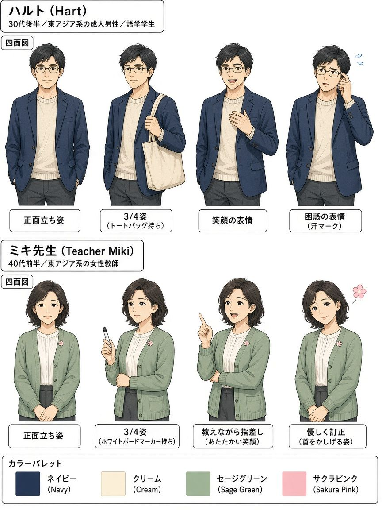
ハルト：東京・神樂坂附近的成人語言學校學生（晚 30 歲、眼鏡、海軍藍外套）。頁面上不使用任何真實姓名／肖像。
ミキ先生：溫柔的語言學校老師（鼠尾草綠開襟衫、櫻花徽章）。
畫風：日漫 clean ink、screentone／柔和暖色、速度線、表情符號、日語氣泡。
12 頁目錄
P01 神楽坂の朝・今度の休み
神楽坂の朝・今度の休み
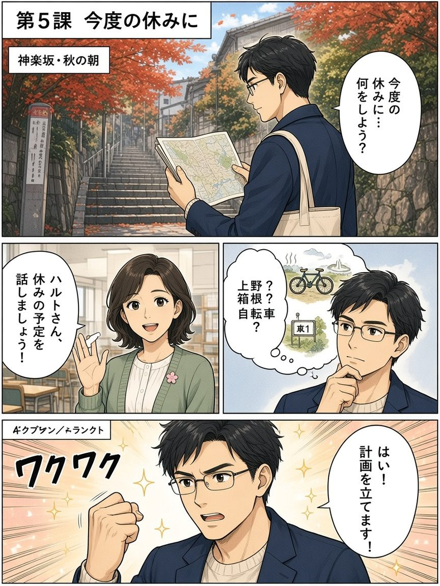
ハルト在神樂坂秋天的石階巷打開地圖，想這次放假要做什麼；語言學校的ミキ老師邀請他說出放假計畫。
記憶：粵：今度＝今道／呢一次；普：kondo≠來年；EN: this/next time；泰: ครั้งนี้／ครั้งหน้า
P02 漢字のひみつ：林・森・畑
漢字のひみつ：林・森・畑
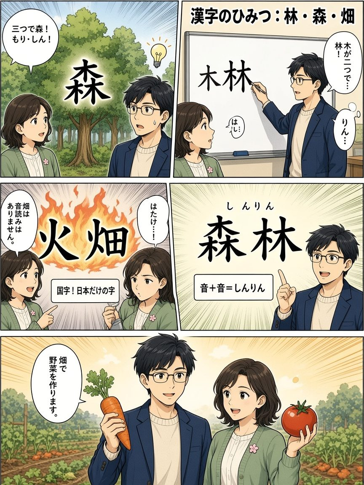
ミキ老師用「木」合體示範：兩木成林、三木成森；火＋田變成日本國字「畑」（無音讀）。
記憶：粵：林＝兩木、森＝三木更密；普：畑＝火田（燒墾）；EN: woods／forest／field；泰: ป่า／ไร่
P03 時間のことば
時間のことば
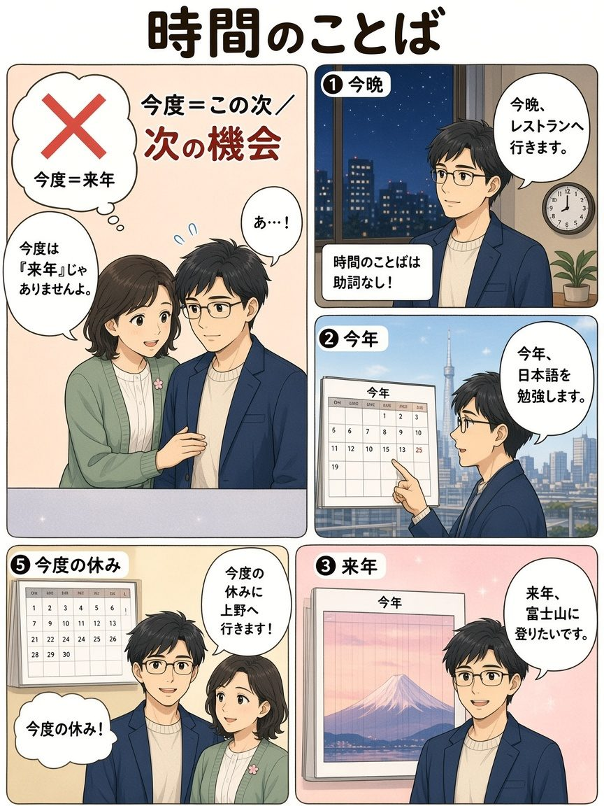
時間詞通常不加助詞；ハルト學會今晩／今年／来年，並訂正「今度≠来年」。
記憶：粵：今晩＝今晚 gaa；普：今度＝這次／下次；EN: kondo≠next year；泰: ค่ำนี้／ปีนี้／ปีหน้า
P04 〜がほしいです
〜がほしいです
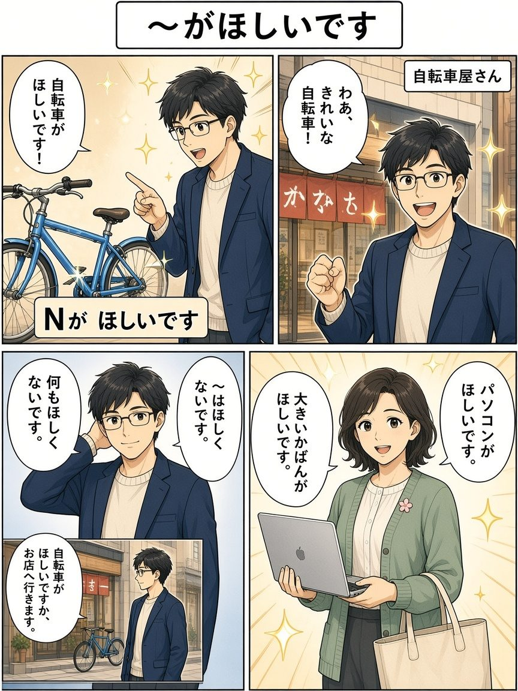
ハルト走進腳踏車店，用「名詞＋がほしいです」說想要；也練習否定「ほしくない」。
記憶：粵：ほしい＝好似；普：想要＋名詞用が；EN: want + noun；泰: อยากได้
P05 借りる？貸す？
借りる？貸す？
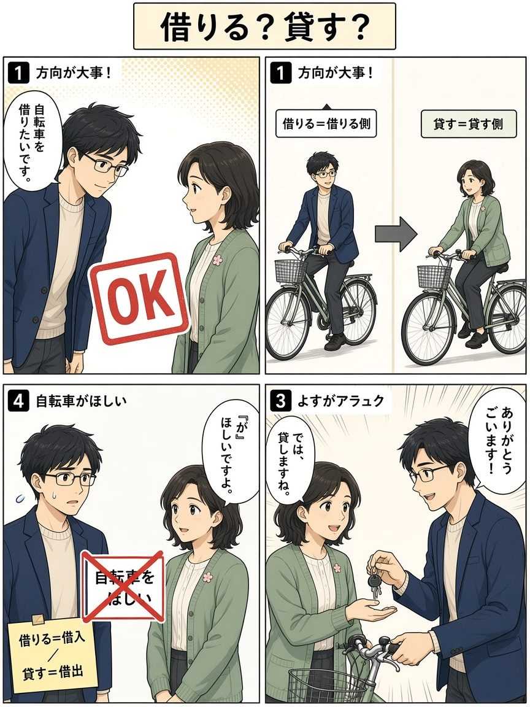
用腳踏車示範方向：借りる＝借入側、貸す＝借出側；順便訂正「がほしい」。
記憶：粵：借り＝借入、貸す＝借出；普：方向相反；EN: borrow／lend；泰: ยืม／ให้ยืม
P06 〜たいです
〜たいです
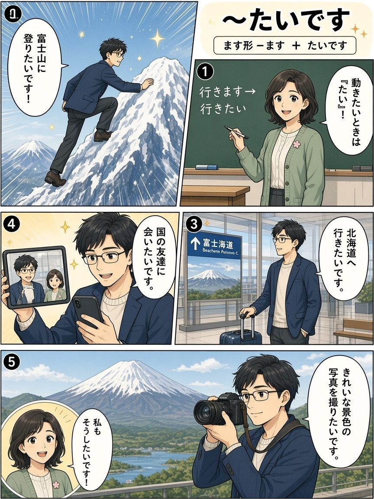
ます形去掉ます＋たい：登りたい、行きたい、会いたい、撮りたい。
記憶：粵：たい＝睇／想做；普：ます詞幹＋たい；EN: want to + verb；泰: อยาก…
P07 ほしい vs たい
ほしい vs たい
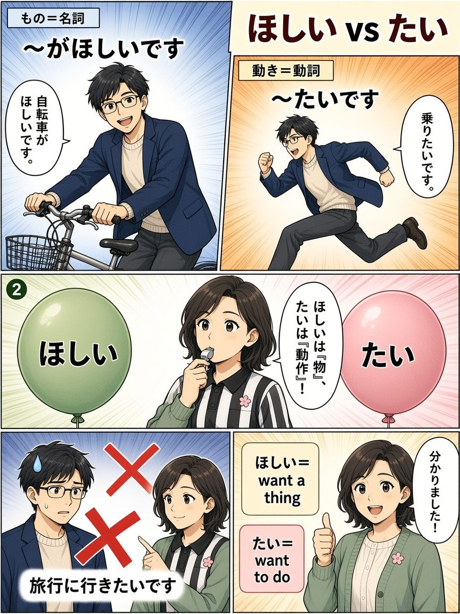
ミキ當裁判：ほしい＝物（名詞）、たい＝動作（動詞）。
記憶：粵：物用ほしい、動作用たい；普：想要物／想做；EN: want a thing vs want to do；泰: อยากได้ vs อยากทำ
P08 あまり好きじゃありません
あまり好きじゃありません
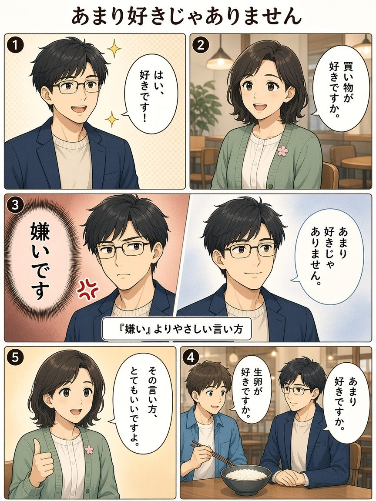
比起直接「嫌い」，用「あまり好きじゃありません」更有禮貌。
記憶：粵：あまり＝唔係好；普：比「嫌い」軟；EN: I don't really like…；泰: ไม่ค่อยชอบ
P09 日本の生卵は新鮮！
日本の生卵は新鮮！
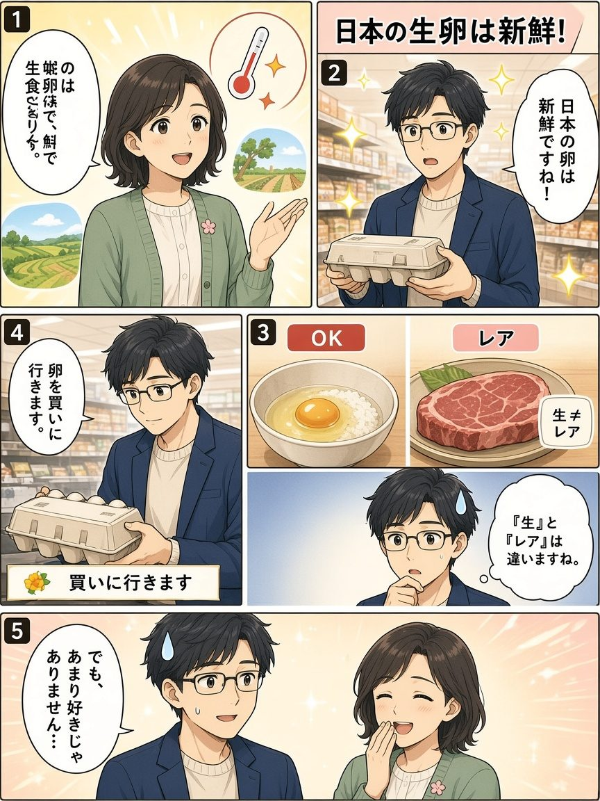
課堂 tangent：日本生蛋新鮮可生吃；「生」≠西餐「レア」；ハルト仍禮貌說不太喜歡。
記憶：粵：新鮮＝鮮；普：生≠西餐 rare；EN: Japanese raw eggs are food-safe；泰: ไข่ดิบญี่ปุ่นสด
P10 〔場所〕へ〔ます〕に行きます
〔場所〕へ〔ます〕に行きます
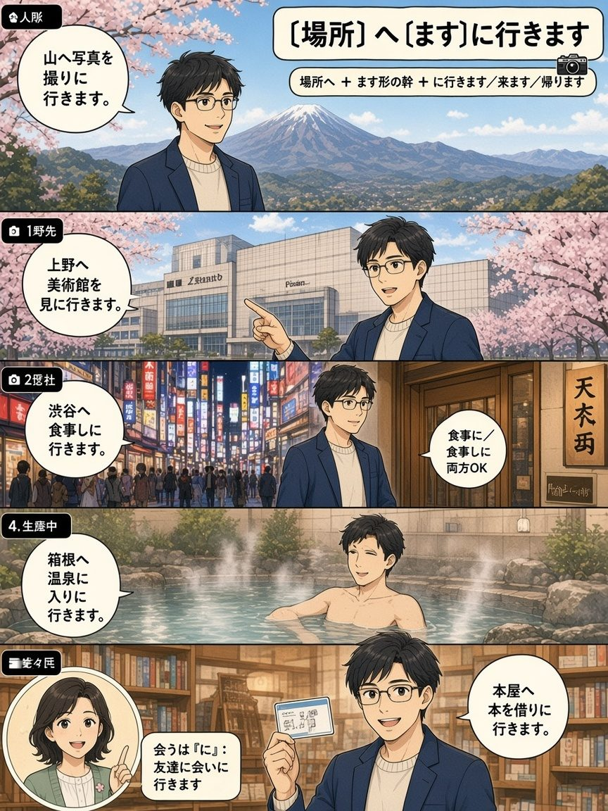
場所へ＋ます詞幹＋に行きます／来ます／帰ります：拍照、看美術館、吃飯、泡溫泉、借書。
記憶：粵：へ＝去邊、に＝去做咩；普：食事に／しに両可；EN: go to PLACE to VERB；泰: ไป…เพื่อ…
P11 わな！旅行しに？散歩しに？
わな！旅行しに？散歩しに？
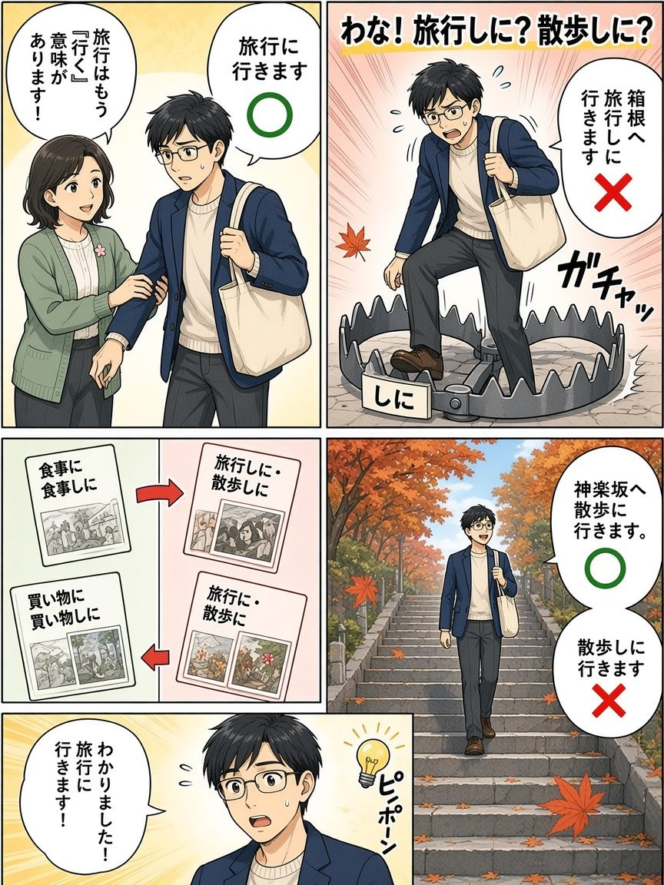
ハルト踩中「しに」陷阱；ミキ救出：旅行・散歩本身含移動，只說「〜に行きます」。
記憶：粵：旅行／散步唔好加しに；普：詞含移動；EN: no shi-ni for travel/walk；泰: ห้ามใส่ しに
P12 休みの計画・よくあるまちがい
休みの計画・よくあるまちがい
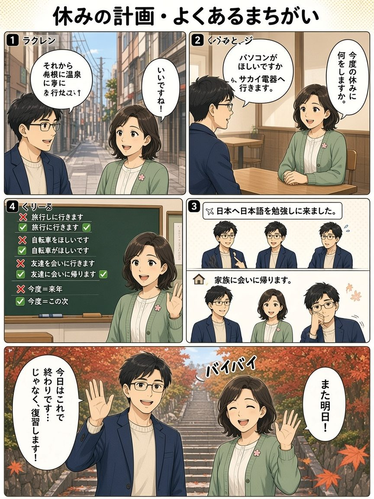
課本風放假對話＋来ます／帰ります＋常見錯誤訂正；神樂坂秋葉道再見。
記憶：粵：来ました＝嚟咗、帰ります＝返；普：会う用に；EN: came to study／go home to meet；泰: มาเรียน／กลับไปเจอ
採用的漫畫 Skill
選定：SpaceZephyr/myskill → baoyu-comic
- 明確支援
--art manga（日漫：大眼睛表情、speed lines、screentone、氣泡／SFX）。 - 教育向知識漫畫＋ohmsha 預設：學生／導師、視覺隱喻、避免 talking-heads。
- 角色表 → 分鏡 → 逐頁 prompt 流程，適合 12 頁連載一致性。